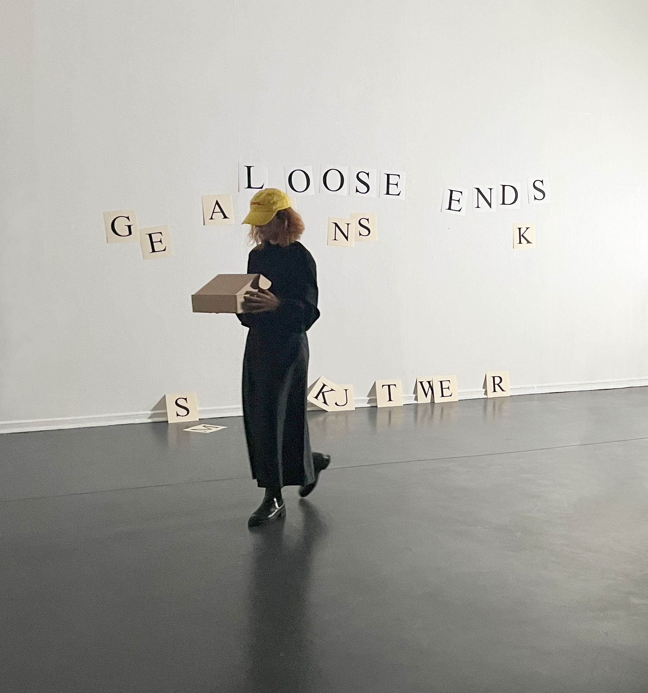

|  |
SHOWS
2026
Jan 14 — Feb 22
Reflejos. En torno al imaginario de Iván Zulueta. Obras de Marta Azparren y Esperanza Collado
(exhib.)
Museo Nacional de Antropología, Madrid
2025
22—23 Nov
Formosa's Paradox
(screen.)
Light Matter Film Festival
Kino Palais, Buenos Aires
7—9 Nov
Formosa's Paradox
(screen.)
Light Matter Film Festival
Nevins Theater, Alfred, New York
18 Oct
Loose Ends (más pequeño que lo menor... y casi no existió)
(perf.)
Galería Réplica
32 FIC Valdivia, Chile
15 & 16 Oct
Things Said Once
(perf.)
Galería Réplica
32 FIC Valdivia, Chile
10 Oct —
4 Jan
Iván Zulueta: Through the Looking Glass
(exhib.)
De Garage, Kunsthal Mechelen
10 Sept
Texture Film Screening
(screen)
Elastic Arts, Chicago
11 — 12 July
SFABF Screening Gallery
(exhibit.)
Minessota Street Project Gallery, San Francisco
12 July
Trágame nube
(screen)
Festival Ecra
Rio de Janeiro, Brazil
24 May
Il flusso e lo stacco
(curated film programme)
Accademia de España en Roma, Rome
24 April
Talking Pictures
(perf. w. Silvia Zayas)
Facultad de Bellas Artes, Cuenca
24 — 26 April
Trágame nube
(solo exhib.)
Facultad de Bellas Artes, Cuenca
12 April
Light Field
(screen)
The Lab, San Francisco
2024
18 — 24 November
Trágame nube
Rencontres Internationales Paris/Berlin
(Video Library)
Paris, France
16 November
The Word Was Deleted
(perf)
L'alternativa Festival
CCCB Barcelona
7 Nov — 6 Dec
Fuck the Margin
(duo exhibit. with David García Casado)
Le Grand Garage, Cuenca
26 October
Desbordamiento apanorámico de la imagen (re-enactment with OJOBOCA / Val del Omar Archive)
(perf)
Alud #4 Hangar
Barcelona
9 October
Loose Ends (más pequeño que lo menor)
Así son las cosas
(perf)
Matadero, Madrid
6 September
Trágame nube
Tocar el cielo con los ojos
(screen)
Matadero Madrid
28 August
Trágame nube + panel discussion
(screen)
ARKIPEL Jakarta International Documentary and Experimental Film Festival, Indonesia
15 June
Desbordamiento apanorámico de la Imagen by Val del Omar
(re-enactment with OJOBOCA, Archivo Val del Omar)
Scratch Expanded
Light Cone, Paris
8 June
Trágame nube
(screen)
Light Matter
Kino Palais, Buenos Aires
7 June
The Word Was Deleted
(perf)
[S8] Mostra de cinéma periférico, A Coruña
25 April
Trágame nube
(screen)
Light Matter Film Festival
Cinemateca Nacional del Ecuador
15 April
The Word Was Deleted
(perf)
Colección Privada
Palacio del Almirante
Universidad de Granada
3 March
Things Said Once
(perf)
El cine rev(b)elado
Museo Centro de Arte Dos de Mayo, Madrid
1 March
Trágame nube
(screen)
Light Matter
No Name Cinema
Santa Fe NM
23 February
Trágame nube
(screen)
Light Matter
The Film-Makers Cooperative, New York
23 February
The Word Was Deleted
(perf)
Center for Sound Art and Acoustics Research
National Taiwan University of Arts
2023
5 November
Trágame nube
(screen)
Light Matter Film Festival
Alfred New York
14 October
Trágame nube
(screen)
Colección privada
Zumzeig, Barcelona
13 October
Trágame nube
(screen)
O que vemos e que nos vê
Strangloscope Festival
Museo Histórico Itajaí, Brazil
1 October
The Word Was Deleted
(perf)
Museum of the Moving Image, New York
21 June — 28 August
Maquinaciones (imagen co-producida para la exposición)
Museo Nacional Centro de Arte Reina Sofía, Madrid
21 April
Desbordamiento apanorámico de la imagen (Re-enactment with OJOBOCA / Archivo Val del Omar)/
SPECTRAL
EMAF Osnabrück
11 March
Things Said Once (perf)
Microscope Gallery, New York
10 March — 1 October
Cinema of Sensations: the Neverending Screen of Val del Omar (group exhibit)
Museum of the Moving Image, New York
2022
1 Dec
Things Said Once (perf)
Xcèntric CCCB Barcelona
3 Nov
We Only Guarantee The Dinosaurs (perf)
Alud#2 CraterLab
Hangar Barcelona
13 — 16 Jun
Acciones para la pantalla (interv)
Las Synergies
Museo Arte Abstracto Español Cuenca
Fundación Juan March
27 May — 29 Jul
Roto abierto Broken Open
(exh, perf)
Luis Adelantado, Valencia
19 Mar
Acciones para la pantalla (perf)
Las Synergies
Museo Oteiza / Punto de Vista Pamplona
2021
28 Nov
Evenly Balanced Almost (perf)
Le cinéma performé
Nouveau Musée National de Monaco
13 Oct
La ciudad como página (interv)
Public space, Faculty of Fine Arts, Cuenca
24 Sept
Kicked with the Front Foot on the Dark Side of the Deck (perf)
Ars Santa Monica, Barcelona
5 June
Kicked with the Front Foot on the Dark Side of the Deck
(perf)
Fundación Luis Seoane,[S8] Mostra de Cinema Periférico, A Coruña
3 June
Spin the Wheel / I Like To Hear It Spin. Johnny Guitar & Las Synergies (perf)
[S8] Mostra de Cinema Periférico, A Coruña
28 May
Talking Pictures (perf w. Silvia Zayas)
Facultad Bellas Artes, Madrid
27 May — 28 Sept
Contemplar una superficie inestable
Curated by Julian Pacomio, Ignacio de Antonio (exhib)
La casa encendida, Madrid
4 Jan
Kicked with the Front Foot on the Dark Side of the Deck (perf)
Facultad Bellas Artes, Cuenca
2020
8 Dec
We Only Guarantee The Dinosaurs
Kino~Okno, Santa Clara, Sevilla
5 Dic
Kicked with the Front Foot on the Dark Side of the Deck (perf)
La Escocesa, Barcelona
21 Oct – 7 Nov
ARTEGUILLOTINA (exhib)
La Morada, Madrid
4 Oct
Evenly Balanced, Almost
(perf + screening)
Image Forum, Tokyo
1 Oct – 6 Dec
ARTEGUILLOTINA (exhib)
Ateneo Cultural Viento del Pueblo, Orihuela
16 Sept
Evenly Balanced Almost (perf)
Taiwan Film Institute, Taipei
1 — 26 June
ARTEGUILLOTINA (exhib)
Espacio Tangente, Burgos
12 — 13 June
A Chair Can Sit You In The Void
Works by Esperanza Collado and Bruno Delgado Ramo (perf + screening)
Taipei Contemporary Art Center
18 May — 1 June
Cine estudio en casa
Círculo de Bellas Artes, Madrid
→ 2019—2014
|
SELECTED WORKS
Dissipation Essays
Loose Ends (más pequeño que lo menor... y casi no existió)
DAY-MARE | NIGHT-LIGHT
DES-tiny
Love me tinder
The Word Was Deleted
Trágame nube
A & B for Val del Omar
Maquinaciones
Loose Ends / Cabos sueltos
Acciones para la pantalla
La relève II
Kicked with the Front Foot on the Dark Side of the Deck
12 oficios para Su Majestad el Rey Felipe VI (Made in Taiwan)
Acúmulo arpegio
Talking Pictures
Evenly Balanced Almost
Las acciones duran
Estados alterados
Things Said Once
Exterior, Night
La relève
The Box
We Only Guarantee the Dinosaurs
Cinema...Corpus vs Cerebrum
Ensayos de la evaporación
A Piece of Broken Mirror Suspended on a String
The Gas Works
Odio el movimiento
Operation Rewrite
EDITIONS
Things Said Once. Comic with drawings by Paula Guerrero. Kino-Okno 100, Madrid 2022
Things Said Once / Cosas dichas una vez. La KINO & Loop Festival Barcelona 2016
LEVE — 7 editions of site-specific field-recordings by invited artists /10" 45rpm vinyl silk-screen printed by hand 2012-2019
BOOKS
Paracinema: la desmaterializacion del cine en las prácticas artísticas (VII Writings on Art Prize) Fundación Arte y Derecho / Trama editorial, Madrid 2012
Cerca de aquí. LEVE
Centro de arte José Guerrero, Granada 2019
WRITING
Entrevista con Esperanza Collado sobre 'Trágame nube'.
Por Francisco Algarín Navarro y Carlos Saldaña (Revista Lumière, Barcelona 2024)
Au Revoir, Michael Snow! Juste une image. Caimán Cuadernos de Cine (Madrid 2023)
The Palpitating Screen of Val del Omar: Apanoramic Overflowing of the Image (Experimentalfilm-Workshop, e.V. Osnabrück, 2023)
Paracinema. En: Maui Alena, La casa de los anfibios. Conversaciones sobre cine (Barcelona, 2022)
Experimental Film and Artistic Expansions in Taiwan and Asia-Pacific (Taiwan Fellowship 2021)
我的電影是想像力生產器 Takashi Makino
in Interview with Esperanza Collado and Tzuan Wu (Funscreen Magazine, Taiwan Film & Audiovisual Institute 2021)
Saker en gång sagda
(Magasinet Walden, Tidskrift för filmkritik nr. 19/20, ed. Martin Grennberger, hösten/vintern 2020)
Y ahora que Mallarmé ha muerto, tiremos los dados sobre la noción de cine (Revista Artefacto Visual, Vol. 5 Núm. 8 2020)
Pantalla negra. Metafísica en el cine. En Vicente Vázquez, Fragua /
Procedimiento general /
Consistente /
Eterno transitorio /
De lo cierto a lo pintado (Galeria Nordés y Tractora Coop 2020)
Cast Light: Holding the Darkness. In Enrique Leal: Cast Light / Luz arrojada. Exhibition catalogue, Ogami Press (Madrid 2019)
Michael Snow in conversation. In Xcèntric Cinema. Conversations on the creative process and the filmic vision (Ed. Gonzalo de Lucas, CCCB 2018)
Choses dites une fois. En Du film performatif (Érik Bullot, dir.). Avec Érik Bullot, Filipa César, Esperanza Collado, Thomas Clerc, Alexis Guillier, Franck Leibovici, Silvia Maglioni & Graeme Thomson, Peter Miller, Rabih Mroué, Uriel Orlow, Simon Ripoll-Hurier, Roland Sabatier, Clara Schulmann (It: éditions, Faucogney-et-la-Mer, 2018)
Walking On and Off the Path: A Conversation with Hamish Fulton
(Concreta Editorial 2017)
El alfabeto como ideograma
(Festival Periferias 2017)
Walking On and Off the Path: una conversación con Hamish Fulton
(Concreta Editorial 2017)
Things Said Once
(La Furia Umana 2015)
Film and Its Resonance in Space: Expanded Cinema in Spain
(Experimental Conversations 2014)
Aquí y ahora: el cine de Laida Lertxundi (Lumière nº7 2014)
Paracinema: the dematerialization
of film in art practices
(Experimental Conversations 2013)
Absences and (Im)possibilities: Traces of an Avant-Garde Cinema in Ireland
(Programme notes EFC 2013)
El cine y su resonancia en el espacio: una aproximación al cine expandido contemporáneo en España
(Arte y Políticas de Identidad 2013)
Cine... Cuerpo o Cerebro
(Salon Kritik 2012)
Projection as a Magnetic Field: the Overflowing of Val del Omar
(Experimental Conversations 2010)
Maximilian Le Cain: Beyond the Cretinous World of Images
(Basement Project Space 2010)
Takahiko Iimura in Interview
(Experimental Conversations
&
Blogs and Docs 2010)
El cine pedía un cuerpo o la política de la alfombra roja (Blogs and Docs 2009)
Val del Omar ó cómo pegar fuego
a los hombres (Centro de Arte Guerrero 2010)
Cinema Now Wants a Body or
the Politics of the Red Carpet
(Experimental Conversations 2009)
Flecks of Interruption
(Experimental Film Club 2009)
T:O:U:C:H:I:N:G the Architectures
of Perception: Cinematic Enchainment and Sentient Machines
(Experimental Film Club 2008)
Experimental Features in Arrebato (Experimental Conversations 2007)
Notes towards paracinema and interruption (unpublished 2007)
Calling the
Elephant: the Folds of Representation (Project Arts Centre, Dublin 2007)
CURATORIAL & PROGRAMMING WORK
Il flusso e lo stacco. Ciclo de cine: Sottosopra – Cieli e visioni ribaltate (Accademia de España en Roma, Rome 2025)
Bruno Delgado Ramo: Super-8 Films (Facultad de Bellas Artes, Cuenca 2021)
Cineinfinito #79: Joyce Wieland (Centro Cultural Doctor Madrazo 2018)
ABC del cine: Érik Bullot
(MUSAC 2017)
Bruce Elder: películas y vídeos (MUSAC 2017)
Viaje-deriva a 24FPS:
Arrieta / Vázquez (MUSAC 2017)
RR: James Benning
(MUSAC 2016)
Landscape Plus: el cine de Laida Lertxundi (Biennial of Havana 2015)
Tronco, Ramas, Delta: Amaia Urra (Facultad BBAA Cuenca 2015)
Una fuerza común es algo que tiene casi todo el mundo (MUSAC
2014)
Devoted Songs: The Films of Nathaniel Dorsky (Irish Film Institute 2014)
Antoni Pinent: PRESENTROSPECTIVA (MUSAC 2014)
Absences and (Im)possibilities: Traces of an Avant-Garde Cinema in Ireland (Irish Film Institute 2013)
Experimental Film Society
(MUSAC 2013)
Spectres of Memory (Irish Film Institute and Temple Bar Gallery 2013)
Unrolling Processes
(Irish Film Institute 2013)
Of Ruins and Light
(Culture Night Cork 2012)
El Cine como Máquina de Guerra:
Crítica y Sublevación en la
Vanguardia más Radical (MUSAC 2011)
More or Less Annihilated by
Saccadic Enchainment by the Sea II (Close-Up Film Centre 2010)
Flecks of Interruption
(Experimental Film Club 2010)
The Films of Vivienne Dick
(Biblioteca Histórica UCM 2009)
More or Less Annihilated by
Saccadic Enchainment by the Sea (Biblioteca Histórica UCM 2009)
Venom, Eternity, and Other Discrepancies
(Experimental Film Club 2009)
T,O,U,C,H,I,N,G the Architectures
of Perception (Experimental Film Club 2009)
Experimental Film in Spain (The Joy Gallery / The Joinery, Dublin 2008)
The Practice of Anti-Illusion (Experimental Film Club 2008)
Márgenes: Experimento y Praxis -
A month of Spanish art and experimental film (thisisnotashop Gallery, National Gallery of Ireland, public space 2008)
Play and Destruction
(Experimental Film Club 2008)
Structural Film and Paracinema
(Irish Film Institute and Filmbase 2007)
SEMINARS & WORKSHOPS
Quitarse el cuerpo. Un cine sin órganos (MasterLAV, Madrid 2025)
Detonar la proyección (expanded cinema workshop with Itsaso Iribarren & Germán de la Riva) (Facultad BBAA Cuenca / MPECV 2022-2023)
Paracinema. El cine como experiencia fuera de la pantalla. Contracciones y expansiones del aparato fílmico (Alud#2 / CraterLab / Hangar Barcelona 2022)
Cuerpo y teatralidad en el aparato fílmico (MasterLAV 2022)
Cinema, body and performance. Expanded Cinema Workshop. (Elías Querejeta Zine Eskola, Tabakalera Donostia 2021)
El cine como experiencia fuera de la pantalla: Contractions and Expansions of the Film Apparatus. Elías Querejeta Zine Eskola (Tabakalera Donostia 2018–2020)
Cinema As Experience: Contractions and Expansions of the Film Apparatus
Master LAV (Madrid 2016, 2018, 2019)
Paracinema Laboratory
Master en Práctica Escénica y Cultura Visual (Artea / MNCARS 2012–2017)
Y ahora que Mallarmé ha muerto, tiremos los dados sobre la noción de cine — El libro por venir / The book to come (Bulegoa z/b Bilbao 2016)
Paracinema Seminar — a programme of lectures and performances (Tabakalera Donostia & Bulegoa z/b 2014)
TALKS
De luz y gesto. Exploraciones en el montaje espacial.
Centro Cultural de España.
Santiago (Chile 2025)
El campo expandido del cine: tendencias, operaciones y proyecciones. Con Esperanza Collado, Andrea Novoa y Sebastián Arriagada. FIC Valdivia (Chile 2025)
De luz, gestos y celuloide: exploraciones en el montaje espacial. Seminariuo A/R/Tográfica. Facultad de Bellas Artes, Universidad de Granada (Granada 2025)
De luz, gestos y celuloide: exploraciones en el montaje espacial. Insubordinaciones fílmicas, MasterLAV (Madrid 2025)
Dust Makes the Beam Visible. 在地實驗 ETAT, Digital Art Foundation (Taipei 2024)
Cine experimental y expansión artística en Taiwan y el Pacífico asiático. En Más allá del canon: otras historias del cine experimental. Aula Xcèntric, CCCB (Barcelona 2020)
Coming to My Place: Esperanza Collado and Hong, Jun-Yuan. Absolute Space for the Arts (Tainan 2020)
El cine como idea: estructura, forma, concepto. Master LAV (Madrid 2020)
The Spaces of Film Digital Art Center (Taipei 2020)
For a Cinema Beyond the Screen. Film Implossion Congruence and Crossroads of Experimental and Documentary Film. Taipei National University of the Arts (Taipei 2020)
Leaving the Movie Theatre: the Spaces of Film. Encuentro internacional de curaduría. CC Montehermoso (Vitoria 2019)
Re-pensar la proyección: el cine como acontecimiento espacial. Universidad de la Comunicación (Ciudad de México 2019)
Radicales libres. Una aproximación al cine experimental. Xcèntric, CCCB (Barcelona 2017)
El cine como experiencia: contracciones y expansiones. CC Montehermoso (Vitoria 2017)
Paracinema: la desmaterialización del cine en las prácticas artísticas. UNTREF / BIM (Buenos Aires 2016)
El cine y su resonancia en el espacio: aproximaciones al cine expandido en España. Centro Cultural de España (Montevideo 2016)
Transversales // Zeharkakoak: Feminismo y Procesos Artísticos. UPV/EHU (Bilbao 2016)
Experimental Film Society. Museum of Contemporary Art of Tehran (Iran 2015)
Cine y coreografía. 12 Bienal de La Habana (Cuba 2015)
Hacer, Sumar, Desaprender. Facultad Bellas Artes (Cuenca 2015)
Performance's Only Life in the Present: a conversation with Takahiko Iimura. S8 Mostra de Cinema Periférico (A Coruña 2014)
The Consecutive Impostors. Instituto Cervantes (Dublin 2011)
Paracinema: Definición y Tendencias. Universidad (Murcia 2013)
Paracinema. Presentación del libro. MUSAC (León 2012)
Cinema as Experience: Overflows and Expansions. Archipelago Val del Omar. MNCARS (Madrid 2010)
The Performative, Bordering of Performance. Market Studios / The Lab (Dublin 2009)
Lines of Creation. With Peter Tscherkassky, Claudio Caldini and Lisl Ponger. Xperimenta Symposium CCCB (Barcelona 2009)
D-Generación: experiencias subterráneas de la no-ficción. Instituto Cervantes (Dublin 2008)
Re-Visions of Experimental Film Seminar. CCCB (Barcelona 2008)
Cinema...Corpus vs Cerebrum. AA Workshop Siggen (Germany 2007)
Forum on Artists and Filmmakers: New Practices in Production, Exhibition and Education. Filmbase (Dublin 2007)
Paracinema: Film Beyond its Limits. The Model Arts / Niland Gallery Sligo (Ireland 2007)
Paracinema: Film Beyond Its Limits. Filmbase (Dublin 2007)
BIBLIOGRAPHY
Skate or Die (S8 Cinema)
Cinema Expanded: Avant-Garde Film in the Age of Intermedia (Jonathan Walley)
Los espacios cualesquiera de Gordon Matta-Clark: building cuts bajo una óptica deleuziana (I) (Luis Bouille de Vicente)
Un lenguaje por llegar
(Alejandro Alonso)
Un elogio al cine desde las artes
performativas (Diario de Navarra)
Narrativize, at the Close-Up Film Centre (Tom Matchett)
Perpetual Motion fanzine
(Sally Golding)
La pantalla negra, espacio de expropiación radical (entrevista con Núria Gómez Gabriel)
Cine sin cine (Érik Bullot)
Becoming Screen (Peio Aguirre)
Interview with Four Members of Experimental Film Society (Émmsen Jafari)
Reopening Experience (Alice Butler)
Love Letter (Jodie Mack)
Yo, un japonés (Julius Richard)
We Only Guarantee the Dinosaurs (Jorge Núñez)
Paracinema: la desmaterialización del cine (Fernando Huerta)
Personal Notes on Operation Rewrite (Rouzbeh Rashidi)
Entre la caja negra y el cubo blanco (Celeste Araújo)
Cinema as Magic: Notes Towards Reinvention (Donal Foreman)
What is Márgenes?
(Maximilian Le Cain)
Experimental Spaces (Donal Foreman)
|
|
Contact
Bio |
{kind=link}
{kind=link}
{kind=link}